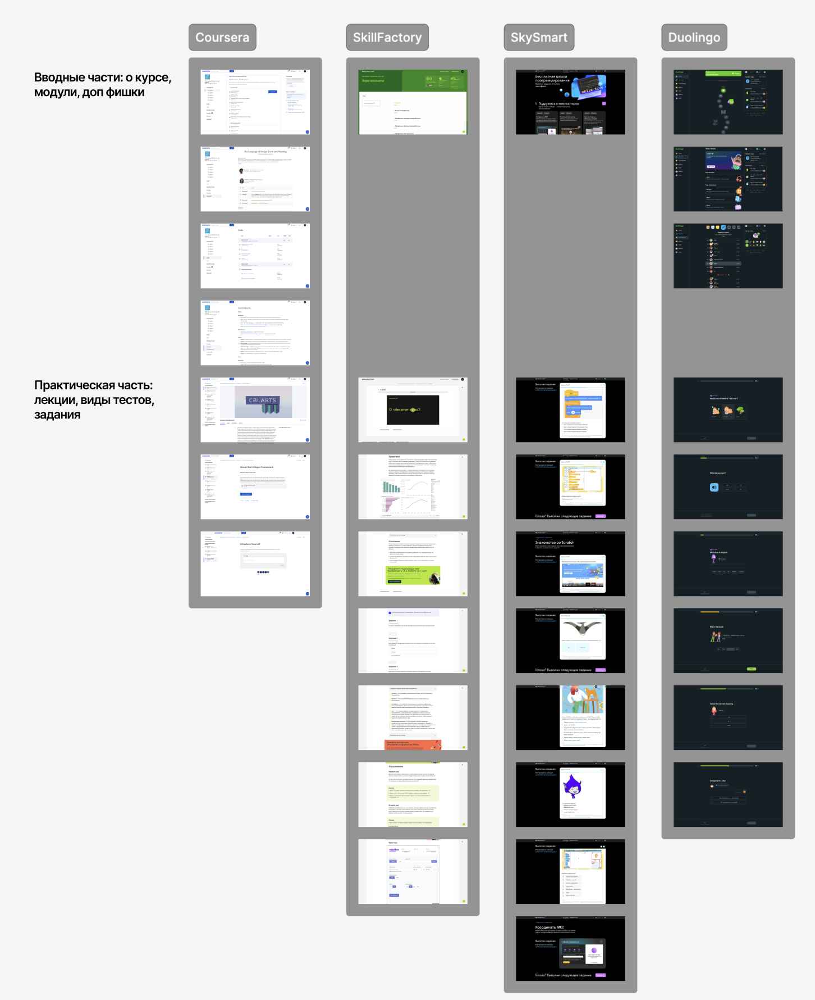
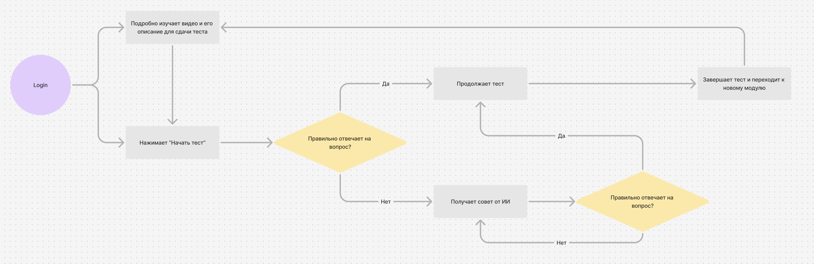
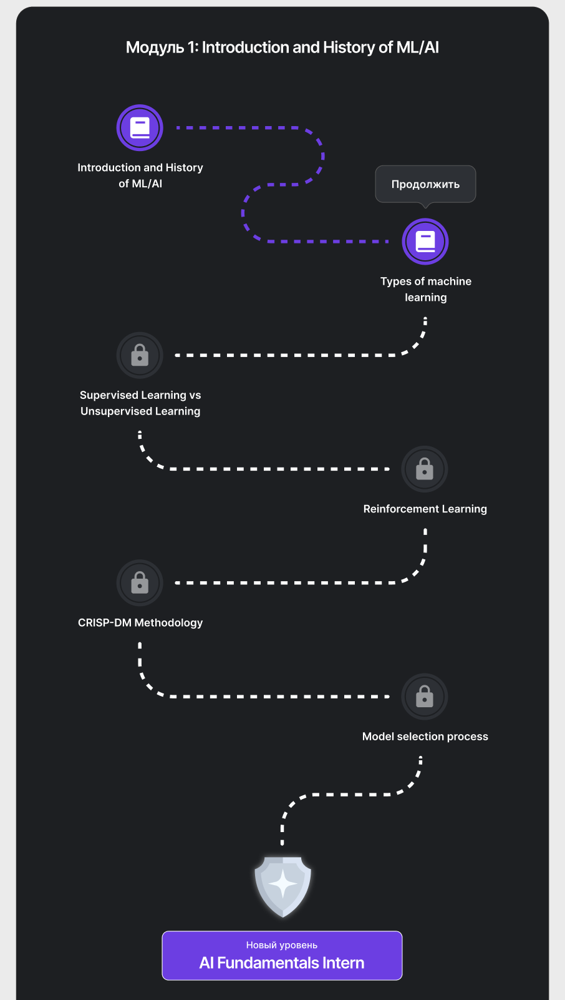
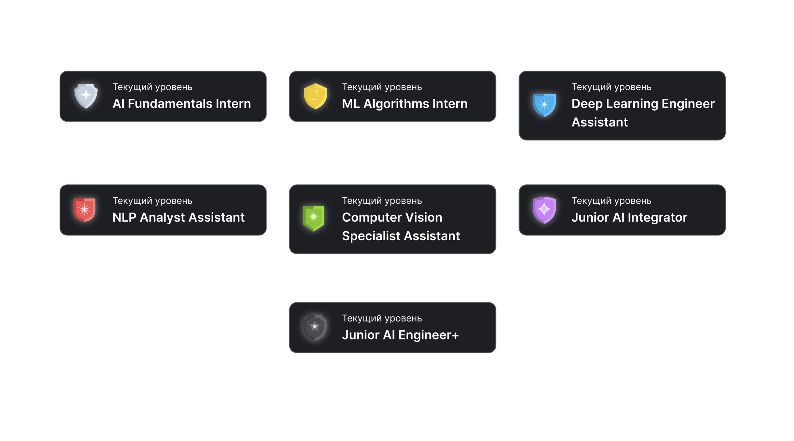
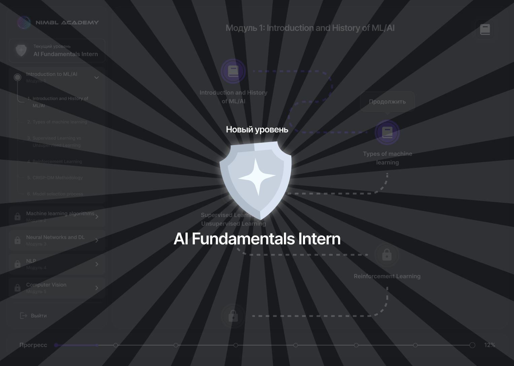
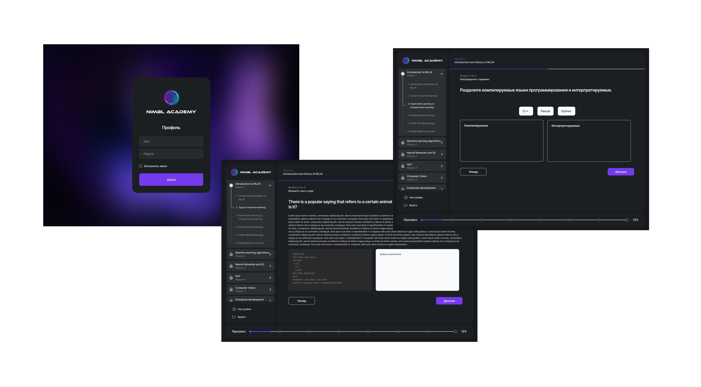
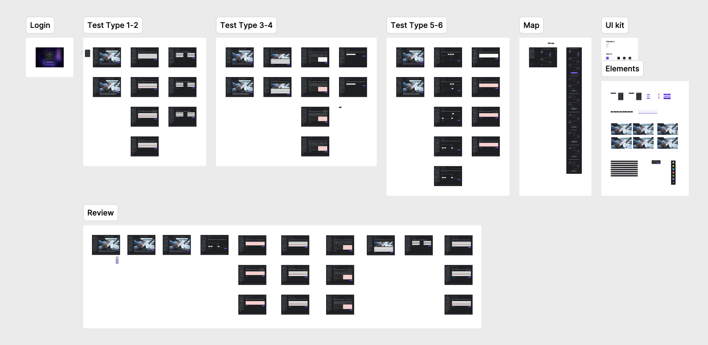

Контекст и роль
Nimbl делает продукты для клиентов и собственный стартап, а ещё ведёт академию в Astana Hub. Курс по ML и AI шёл на созвонах в Google Meet с онлайн-экзаменами, а лекции, файлы и задания рассылались через разные сервисы.
Чтобы развивать академию, решили сделать собственную платформу: студент смотрит лекцию и сразу проверяет себя на практике. Я был единственным дизайнером в команде из шести человек и за полтора месяца спроектировал платформу целиком — от исследования и сценариев до интерфейса, системы званий и типов заданий.
Проблема
В среднем на поток приходило 16 студентов, а до конца доходили около 9 — это всего 56%. Почти половина группы бросала курс, не получив диплом.
Материалы были разбросаны: лекции в одном месте, книги и файлы в другом, звонки в третьем. Студент терял нужное, отставал от группы и в какой-то момент переставал заниматься.
Если собрать все материалы в одном месте и сделать прогресс по курсу видимым и интересным, больше студентов дойдёт до конца и получит диплом.
Цель
Главная метрика — Completion Rate, доля студентов потока, которые прошли курс до конца и получили диплом. Перед запуском мы задали коридор цели в процентных пунктах от исходных 56%:
Исследование
Конкурентный анализ
Я разобрал Coursera, SkillFactory, SkySmart и Duolingo по двум частям: вводной (о курсе, модули, дополнительные механики) и практической (лекции, виды тестов, задания). Coursera и SkillFactory дают понятную структуру курса, SkySmart — разнообразную практику. Duolingo лучше всех удерживает пользователя: прогресс там виден как путь, а каждый шаг вознаграждается. Эту механику я и решил перенести на взрослый курс по ML.

Глубинные интервью
Я провёл интервью с выпускниками прошлых онлайн-потоков академии, чтобы понять, почему студенты не доходят до конца. Два главных вывода сразу превратились в решения:
Сценарий студента
Базовый цикл: студент смотрит видеолекцию с описанием, начинает тест и переходит к следующему модулю, когда ответит на все вопросы. Важная деталь — неверный ответ не обрывает тест. Студент получает подсказку от ИИ и пробует снова, пока не разберётся. Так практика становится частью обучения, а не экзаменом, на котором можно только провалиться.

Ключевые решения
Курс как путь на карте, а не список уроков
Каждый модуль показан как дорожка из уроков: пройденные подсвечены, текущий отмечен кнопкой «Продолжить», остальные закрыты замком. Студент всегда видит, где он и сколько осталось до конца модуля. Внизу экрана — общий прогресс по курсу в процентах, а в боковом меню — все 6 модулей.
Практика — условие движения дальше
Выпускники признавались, что пропускали практику и отставали незаметно для себя. Поэтому следующий урок открывается только после теста по текущему. Чтобы ограничение не превратилось в стену, после неверного ответа студент получает подсказку ИИ: застрять можно, а сдаться — сложнее.

Звания вместо номеров модулей
За каждый пройденный модуль студент получает новое звание и векторный щит своего цвета — всего 7 уровней, от AI Fundamentals Intern до Junior AI Engineer+. Названия похожи на реальные позиции в индустрии, поэтому прогресс по курсу ощущается как карьерный рост, а не как галочка в списке. Щиты я нарисовал сам.


6 типов вопросов, чтобы тест не превращался в рутину
Однотипные тесты быстро надоедают. Я спроектировал 6 типов вопросов: от выбора правильного ответа и распределения терминов по категориям до заданий с кодом, где студент пишет решение и сразу видит вывод компилятора. Для курса по ML практика с кодом особенно важна.

Процесс
Сначала я собрал базовую версию: лекции и модули без игровых механик. Затем добавил геймификацию и типы заданий. Бэкенд готовился параллельно, а готовые страницы я сразу передавал во фронтенд, поэтому платформа собиралась по частям и была готова к запуску за полтора месяца. Задачи вели в ClickUp.
Макеты в Figma разложены по типам тестов, карте курса и UI-киту. Отдельно собраны состояния проверки ответов.

Результаты
Чтобы проверить гипотезу, платформу запустили на одном потоке. Курс длился 4 месяца: из 14 студентов до конца дошли 11 и получили дипломы.
Важная оговорка: это один поток из 14 человек, и выборка небольшая. Кроме того, на результат повлияли сразу все изменения — новая платформа, обязательная практика и геймификация, — поэтому вклад каждого из них отдельно оценить нельзя.
Что бы я сделал дальше
- Подтвердил бы эффект на нескольких потоках. Один поток показывает направление, но для уверенного вывода нужно больше данных.
- Нашёл бы точки отвала. Посмотрел бы, на каком модуле и на каком типе вопросов студенты задерживаются дольше всего или уходят.
- Проверил бы роль подсказок ИИ. Как часто студенты к ним обращаются и помогают ли они пройти тест с первой подсказки.